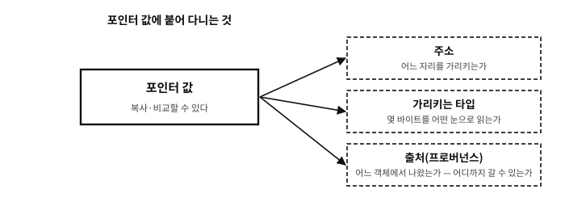

36 객체, 주소, 포인터
먼저 알아야 할 것
돌아보기
34장에서 “함수가 밖의 변수를 바꾸는 정공법은 변수의 주소를 값으로 복사해 넘기는 것”이라 했다. 3장의 지식으로 풀어 보면 — 주소를 “값으로 복사”할 수 있는 근거는 무엇이었나?
답. 주소가 번호처럼 다룰 수 있는 값이라는 것(3장) — 사물함 번호는 적어 둘 수도, 복사해 건넬 수도 있다. C에서 그 “주소를 담는 변수”의 타입이 포인터다. 오늘 배우는 것은 새 개념이 아니라, 3장의 착상에 문법 옷을 입히는 일이다.
한 가지만 미리 못박아 둔다. 복사하고 비교할 수 있다고 해서 포인터가 정수인 것은 아니다. C는 포인터를 정수와 다른 종류의 값으로 두고, 거기에 가리키는 타입과 출처(어느 객체에서 나왔는가)라는 계약을 붙인다. 4장에서 본 “번호가 같아도 같은 포인터가 아닐 수 있다”는 이야기가 여기서 시작되고, 38장의 프로버넌스에서 정식으로 마무리된다.
이 장의 필요성과 맥락
이 장이 끝나면
&와 *, 그리고 sizeof까지, 26장부터 미뤄 온 외상이 모두 청산된다.이 장에서 답할 질문
- 그러면 「변수」와 「객체」는 같은 말인가?
&는 아무 객체에나 붙일 수 있는가?- 포인터는 무엇을 가리킬 수 있는가 — 객체만인가?
- 그러면 크기를 담는 변수는 무조건
size_t로 하면 되는가? - 포인터 변수 자체의 크기는 얼마인가 —
sizeof p는? - 변수의 주소를 직접 찍어 보면 재미있을 것 같은데 — 왜 시연에서 주소 값을 인쇄하지 않았는가?
- 그러면 “주소는 정수다”라는 말은 틀린 것인가?
- 가변 인자로 넘어갈 때 어차피 진급을 거치니, 포인터도
void *로 바뀌는 것 아닌가? - 그러면
%p대신 언제나PRIxPTR를 쓰면 되지 않는가? - 그러면
void *는 왜 “아무 포인터나 담는 그릇”으로 쓸 수 있는가?
36.1 먼저 세 낱말 — 객체, 주소, 포인터#
이 장의 제목은 낱말 셋이다. 셋 다 앞에서 여러 번 지나쳤다 — 「주소」는 3장의 사물함 번호로, 「객체」는 표준을 인용할 때마다, 「포인터」는 「나중에 배운다」는 약속으로. 그러나 셋 중 어느 것도 정의한 적은 없다. 문법(*와 &)부터 배우면 기호는 금방 손에 익지만, 기호가 무엇을 다루는지가 흐린 채로 남는다. 포인터가 어렵다는 평판의 상당 부분이 사실 이 흐림에서 온다.
그래서 이 장은 순서를 바꾼다. 세 낱말을 하나씩, 표준이 쓰는 뜻 그대로 정의하고, 그림으로 그리고, 작은 프로그램으로 확인한 다음에야 문법으로 넘어간다. 서두르지 않아도 된다. 이 절을 제대로 지나면 이 부의 나머지 열 장이 한결 쉬워진다.
| 낱말 | 한 줄 정의 | 사물함 복도로 말하면 |
|---|---|---|
| 객체(object) | 값을 담는 기억의 한 구역 | 이어 붙은 사물함 몇 칸 — 그 안에 든 것이 값 |
| 주소(address) | 객체가 놓인 자리 — 그 첫 바이트의 번호 | 그 몇 칸 가운데 첫 칸의 번호 |
| 포인터(pointer) | 주소를 값으로 담는 타입, 그 값, 그 값을 담은 변수 | 번호를 적어 둔 쪽지 — 쪽지도 어느 사물함엔가 들어 있다 |
표 36.1 — 객체·주소·포인터가 각각 무엇인가 — 이 절의 요약
표를 외울 필요는 없다. 아래에서 한 줄씩 풀어 간다.
36.1.1 객체 — 값을 담는 기억의 한 구역#
표준은 객체를 이렇게 정의한다.
객체: 실행 환경 안의 데이터 저장 영역으로, 그 내용이 값을 나타낼 수 있는 것.
(주: 참조될 때 객체는 특정한 타입의 것으로 해석될 수 있다.)
— C23 §3.15
어려운 말이 하나도 없는데 한 번에 와닿지 않는 문장이다. 세 토막으로 잘라 읽자.
- 「데이터 저장 영역」 — 기억 속의 자리다. 3장의 사물함 복도에서 한 칸 이상을 차지하는 이어 붙은 구간이다.
int하나는 이 책의 기계에서 사물함 네 칸(4바이트)을 차지하고,double하나는 여덟 칸을 차지한다. - 「실행 환경 안의」 — 프로그램이 실행되는 동안 있는 것이다. 소스 코드에 적힌 글자가 아니라, 프로그램이 돌 때 기억 속에 실제로 마련되는 자리다.
- 「그 내용이 값을 나타낼 수 있는」 — 그 칸들에 든 비트들이 어떤 값으로 읽힐 수 있다는 뜻이다. 네 칸에 든 32비트가
55라는 정수로 읽히는 식이다.
괄호 속의 주(註)도 중요하다. 칸 안의 비트는 그 자체로는 아무 뜻이 없다 (3장 — 「덩어리를 아는 것은 읽는 쪽이다」). 같은 네 칸을 int 로 읽으면 정수가 되고, float 로 읽으면 실수가 된다. 객체를 무엇으로 읽을지는 그 객체에 닿는 수식의 타입이 정한다. 이 주가 뒤에서 포인터 타입이 왜 필요한지의 답이 된다.
그러니 int n = 55; 라고 쓰면 일어나는 일은 이렇다. 기억 속에 네 바이트짜리 구역이 하나 마련되고, 그 구역에 55 를 나타내는 비트가 들어가고, 그 구역에 n 이라는 이름이 붙는다. 그 구역이 객체다. 이 책의 기계(작은 끝 x86-64)에서 그 구역이 200번지부터 놓였다고 그려 보면 이렇다.
37 | 00 | 00 | 00 |
200 | 201 | 202 | 203 |
그림 36.1 — 객체 n — 200번지부터 네 칸. 55(16진수 37)가 작은 끝 순서로 들어 있다
굵은 테두리 네 칸이 하나의 객체다. 칸 하나하나는 바이트이고, 네 칸이 모여 int 객체 하나를 이룬다. (번지 200 은 그림을 위해 고른 수다. 실제 번지는 실행할 때마다 달라진다 — 이 장 뒤의 문답에서 그 이유를 본다.)
흔한 오해. “객체라니, 객체 지향 프로그래밍의 그 객체인가?”
아니다. 이름만 같다. C++·자바·파이썬에서 말하는 객체는 「자료와 그것을 다루는 메서드를 묶은 것」이지만, C의 객체에는 메서드도 클래스도 없다. C의 객체는 훨씬 소박하다 — 값을 담을 수 있는 기억의 구역, 그것뿐이다.
그래서 C에서는 int 하나도 객체이고, char 하나도 객체다. 객체 지향 언어의 감각으로 「int 가 무슨 객체냐」고 느낀다면, 낱말이 다른 뜻으로 쓰이고 있음을 기억해 두면 된다. (사실 C의 용법이 더 오래되었다. C++ 표준도 이 소박한 뜻을 그대로 물려받아 쓴다.)
36.1.2 무엇이 객체이고, 무엇이 아닌가#
정의를 알았으니 이제 가려 보자. 처음에는 의외인 것이 몇 있다.
| 무엇 | 객체인가 | 까닭 |
|---|---|---|
int n; 으로 선언한 n | 객체다 | 이름이 붙은 4바이트 구역 |
배열 int a[3]; 과 그 원소 a[1] | 둘 다 객체다 | 배열 전체가 12바이트 객체이고, 원소 하나하나도 4바이트 객체다 (39장) |
| 구조체와 그 멤버 | 둘 다 객체다 | 큰 객체 안에 작은 객체들이 들어 있다 (47장) |
문자열 리터럴 "hi" | 객체다 — 이름이 없다 | 프로그램이 도는 내내 있는 char 배열 (43장) |
malloc 이 내준 구역 | 객체다 — 이름이 없다 | 이름 없이 주소로만 닿는 구역 (46장) |
3, n + 1 의 결과 | 아니다 — 값이다 | 계산되어 나온 수일 뿐, 담긴 자리가 없다 |
함수 main | 아니다 | 기억에 있기는 하지만 표준은 함수를 객체와 따로 둔다 (27장) |
타입 int, 매크로, 열거 상수 | 아니다 | 컴파일 시점의 이름일 뿐, 실행 중의 구역이 아니다 |
표 36.2 — 객체인 것과 아닌 것
두 가지를 눈여겨볼 만하다.
첫째, 객체에 이름이 꼭 있어야 하는 것은 아니다. 문자열 리터럴과 malloc 의 구역은 이름 없이 있다. 이름이 없으니 자리로만 닿을 수 있고, 그 자리를 담는 것이 바로 포인터다. 포인터가 없으면 이름 없는 객체에는 손댈 방법이 없다 — 포인터가 왜 필요한지에 대한 가장 짧은 답이다.
둘째, 값과 객체는 다르다. 3 은 값이지 객체가 아니다. n 은 객체이고, 지금 그 안에 3 이 들어 있을 수 있다. 상자와 상자에 든 물건의 관계다. 이 구별이 흐리면 「3 의 주소는 무엇인가」 같은 뜻 없는 질문이 생긴다 — 담긴 자리가 없으니 주소도 없다.
문. 그러면 「변수」와 「객체」는 같은 말인가?
답. 거의 같지만 같지는 않다. 일상적으로 「변수」는 이름이 붙은 객체를 가리킨다. int n; 이 선언하는 것이 그것이다 — 객체 하나와, 그 객체를 부르는 이름 하나.
흥미로운 것은 C 표준에는 「변수」의 정의가 없다는 점이다. 표준이 정의하는 것은 객체(구역)와 식별자(이름)이고, 선언이 둘을 이어 준다. 표준이 굳이 「변수」라는 낱말을 쓰지 않는 까닭이 위의 표에 있다 — 이름 없는 객체가 있기 때문이다. malloc 의 구역은 변수라고 부르기 어색하지만 틀림없는 객체다.
이 책도 평소에는 「변수」라고 편하게 말한다. 다만 이름 없는 구역까지 함께 말해야 할 때, 그리고 표준의 규칙을 정확히 옮길 때는 「객체」라고 쓴다.
36.1.3 객체가 가진 것들#
객체 하나에는 늘 몇 가지가 따라붙는다. 이 부의 열한 장은 사실상 이 목록을 하나씩 깊이 파는 장들이다.
| 성질 | 무엇인가 | 어디서 더 다루나 |
|---|---|---|
| 크기 | 몇 바이트를 차지하는가 — sizeof 로 묻는다 | 이 장 |
| 자리 | 기억의 어디에 놓였는가 — 그것이 주소다 | 이 장 |
| 값 | 지금 그 바이트들이 나타내는 것 | 27장 |
| 타입 | 그 바이트들을 무엇으로 읽을 것인가 | 38장의 유효 타입 |
| 정렬 | 몇의 배수 번지에 놓여야 하는가 | 4·38장 |
| 수명 | 언제 생겨나 언제 사라지는가 | 45장 |
표 36.3 — 객체 하나에 따라붙는 것들
특히 마지막 줄 수명을 기억해 두자. 객체는 영원히 있지 않다. 함수 안의 변수는 그 함수가 끝나면 사라진다. 사라진 객체의 자리를 여전히 들고 있는 포인터가 C의 이름난 사고 가운데 하나인데, 그 이야기는 45장에서 한다.
36.1.4 값인가 자리인가 — 좌변값이라는 눈#
n = n + 1; 을 천천히 읽어 보자. 같은 n 이 두 번 나오는데 하는 일이 다르다.
- 오른쪽의
n은 값이다. 「n 에 지금 든 수를 꺼내 와라」. 꺼낸 값에 1 을 더한다. - 왼쪽의
n은 자리다. 「n 이라는 구역에 넣어라」. 거기에 든 값은 관심이 없다.
표준은 이 구별에 이름을 붙였다. 객체를 가리킬 수 있는 수식을 좌변값(lvalue)이라 부른다(§6.3.2.1p1). 35장에서 대입의 왼쪽을 다룰 때 한 번 만난 말이다. n 은 좌변값이다. a[1] 도 좌변값이다. 그러나 n + 1 은 좌변값이 아니다 — 계산된 값일 뿐 어느 구역도 가리키지 않는다. 그래서 n + 1 = 5; 는 컴파일 오류다. 넣을 자리가 없기 때문이다.
그러면 오른쪽의 n 은 어떻게 값이 되는가. 표준의 규칙은 이렇다 — 좌변값은 대부분의 자리에서 자동으로 「그 객체에 담긴 값」으로 바뀐다(같은 조항 p2, 좌변값 변환). 바뀌지 않는 자리가 몇 군데 있는데, 대입의 왼쪽, ++·-- 의 대상, sizeof 의 대상, 그리고 곧 배울 & 의 대상이다. 이 자리들에서 수식은 「값」이 아니라 「자리」로 남는다.
그 반대편 — 오른쪽의 n 처럼 값으로 쓰이는 것, 그리고 n + 1 처럼 처음부터 값일 뿐인 것 — 을 흔히 우변값(rvalue)이라 부른다. 다만 이 말은 관용어다. 표준은 「rvalue 라고 부르기도 하는 것을 이 문서는 수식의 값이라 기술한다」고 각주에 적어 둘 뿐(§6.3.2.1 각주), 낱말로 쓰지는 않는다. 두 이름은 대입의 왼쪽·오른쪽에서 왔지만 이름보다 뜻이 중요하다 — 좌변값은 자리를 가리키는 수식이고, 우변값은 값 그 자체다. (const 변수처럼 대입의 왼쪽에 올 수 없는 좌변값도 있다 — 50장의 「수정 가능한 좌변값」.)
이것으로 다음 절의 결론이 미리 나온다. & 는 자리를 묻는 연산자이므로, 자리가 있는 것(좌변값)에만 쓸 수 있다. &n 은 되고 &3 과 &(n + 1) 은 안 된다.
36.1.5 주소 — 객체가 놓인 자리#
기억은 바이트의 긴 줄이고, 바이트마다 번호가 있다(3장). 표준도 같은 그림을 갖고 있다. 바이트를 「주소로 가리킬 수 있는 데이터 저장의 단위」로 정의하고, 객체의 바이트 하나하나의 주소를 저마다 따로 나타낼 수 있다고 적어 둔다(§3.6).
그러면 객체의 주소는 무엇인가. 객체는 여러 바이트에 걸쳐 있는데, 주소는 하나다. 답은 첫 바이트, 곧 가장 낮은 번지의 바이트다. 위 그림의 n 은 200·201·202·203 네 칸을 차지하고, n 의 주소는 200 이다. 표준도 객체를 가리키는 포인터를 문자 포인터로 바꾸면 「그 객체의 가장 낮은 번지 바이트를 가리킨다」고 말한다(§6.3.2.3p7).
여기서 중요한 질문이 하나 생긴다. 주소 200 만으로는 객체를 다 알 수 없다. 200번지에서 시작하는 것이 1바이트짜리 char 인가, 4바이트짜리 int 인가, 8바이트짜리 double 인가? 번지는 시작점만 말해 줄 뿐, 몇 칸을 어떻게 읽을지는 말해 주지 않는다. 앞에서 본 정의의 주 — 「참조될 때 특정한 타입으로 해석된다」 — 가 여기서 다시 나온다. 주소에 타입이 함께 붙어야 비로소 그 자리의 객체를 읽을 수 있다.
C는 이 짝을 처음부터 묶어 둔다. 단항 연산자 & 의 정의를 보자.
단항 & 연산자는 피연산자의 주소를 내놓는다. 피연산자의 타입이 「타입」이면, 결과의 타입은 「타입을 가리키는 포인터」다.
— C23 §6.5.4.2
그러니 &n 은 맨 번호 200 이 아니다. 「200번지에 int 가 있다」는 값이고, 그 값의 타입이 int * 다. C에서 주소를 손에 쥐는 길은 언제나 이렇게 타입이 붙은 값을 거친다. 이 책이 앞으로 「주소」라고 하면 기계 층의 번호를, 「포인터 값」이라고 하면 그 번호에 타입(과 38장에서 볼 출처)이 붙은 언어 층의 값을 가리킨다.
문. & 는 아무 객체에나 붙일 수 있는가?
답. 거의 그렇다. 좌변값이고 객체를 가리키면 된다 — 변수, 배열 원소, 구조체 멤버, *p 같은 것들이다. 예외가 둘 있다. register 로 선언한 변수, 그리고 비트 필드 (몇 비트짜리 구조체 멤버)는 주소를 얻을 수 없다(§6.5.4.2 의 제약). 앞의 것은 「레지스터에 둘지도 모르니 주소를 묻지 않겠다」는 약속이고, 뒤의 것은 바이트 경계에서 시작하지도 않는 조각이라 번지로 가리킬 수 없기 때문이다. 둘 다 일상에서 만날 일은 드물다.
그리고 함수에도 & 를 붙일 수 있다. 함수는 객체가 아니지만 기억 어딘가에 놓인 코드라서 주소가 있다. 그렇게 얻은 것이 함수 포인터다(64장).
36.1.6 포인터 — 주소를 값으로 담는 것#
이제 마지막 낱말이다. 표준은 포인터를 타입으로 정의한다.
포인터 타입은 함수 타입이나 객체 타입으로부터 파생될 수 있으며, 그 타입을 가리켜지는 타입이라 한다. 포인터 타입은, 그 값이 가리켜지는 타입의 실체를 참조하는 객체를 서술한다.
— C23 §6.2.5
번역투를 걷어 내면 이렇다. 「int 를 가리키는 포인터」라는 타입이 있고, 그 타입의 객체에 담긴 값은 어떤 int 를 가리킨다. int 라는 타입에서 int * 라는 새 타입이 파생된다 — double 에서는 double * 가, char 에서는 char * 가.
여기서 초보자를 가장 헷갈리게 하는 사정이 하나 있다. 「포인터」라는 낱말 하나가 세 가지를 가리킨다.
| 쓰임 | 무엇인가 | 보기 |
|---|---|---|
| 포인터 타입 | 「무엇을 가리키는가」까지 적힌 타입 | int *, char *, double * |
| 포인터 값 | 그 타입의 값 하나 — 타입이 붙은 주소 | &n 의 결과 |
| 포인터 객체(포인터 변수) | 포인터 값을 담아 두는 객체 | int *p; 의 p |
표 36.4 — 「포인터」라는 낱말의 세 가지 쓰임
「p 는 포인터다」라는 문장은 보통 세 번째 뜻이고, 「&n 은 포인터다」는 두 번째 뜻이다. 문맥으로 대개 구별되지만, 헷갈릴 때는 이 표로 돌아와 「지금 타입 얘기인가, 값 얘기인가, 그 값을 담은 상자 얘기인가」를 물으면 된다.
그리고 이 절에서 가장 중요한 한 문장이 여기 있다. 포인터 변수도 객체다. 다른 변수와 똑같이 기억 속에 자기 구역을 갖고, 크기가 있고(이 책의 기계에서 8바이트), 자기 주소가 있다. 다만 그 구역에 담긴 값이 다른 객체의 주소일 뿐이다. int *p = &n;을 하고 나면 기억은 이렇게 된다(p 가 208번지에 놓였다고 하자).
C8 | 00 | 00 | 00 | 00 | 00 | 00 | 00 |
208 | 209 | 210 | 211 | 212 | 213 | 214 | 215 |
그림 36.2 — 객체 p — 208번지부터 여덟 칸. 담긴 값은 200(16진수 C8), 곧 n 의 주소다
n 의 그림과 나란히 놓고 보자. 200번지에는 55 라는 값이 들어 있고, 208번지에는 200 이라는 값이 들어 있다. 둘 다 그냥 비트이고, 둘 다 그냥 객체다. 다른 점은 읽는 눈뿐이다 — p 의 타입이 int * 이므로, C는 그 여덟 바이트를 「int 가 놓인 자리」로 읽는다. 「p 가 n 을 가리킨다」는 말의 정체가 이것이다. p 에 담긴 값이 n 의 주소라는 뜻이고, 그 이상의 신비는 없다.
3장의 사물함 비유로 옮기면 깔끔해진다.
n은 200번부터 이어진 사물함 네 칸이고, 안에 55 가 들어 있다.&n은 「200번 칸, 거기int있음」이라고 적은 쪽지다.p는 그 쪽지를 넣어 둔 또 다른 사물함(208번부터 여덟 칸)이다.*p는 「p 에 든 쪽지를 꺼내 읽고, 적힌 칸으로 찾아가라」다.
쪽지도 어느 사물함엔가 들어 있으니, 그 사물함에도 번호가 있다. 그 번호를 적은 쪽지를 또 만들 수 있다 — &p 이고, 타입은 int **(「int * 를 가리키는 포인터」)다. 포인터를 가리키는 포인터가 처음에는 현기증 나게 들리지만, 쪽지를 넣어 둔 사물함의 번호를 적은 쪽지라고 생각하면 이상할 것이 없다.
흔한 오해. “포인터는 주소다”
절반만 맞는 말이다. 포인터 값은 주소에 타입이 붙은 것이고, 포인터 변수는 그 값을 담는 객체다. 「포인터는 주소다」라고만 기억하면 두 가지를 놓친다.
하나는 타입이다. 같은 200번지라도 int * 로 가리키면 네 바이트를 정수로 읽고, char * 로 가리키면 한 바이트를 문자로 읽는다. 타입이 다르면 같은 번지에서도 다른 일이 일어난다.
다른 하나는 포인터 변수 자신의 자리다. p 와 *p 와 &p 는 셋 다 다르다 — p 는 쪽지에 적힌 번호(200), *p 는 그 번호의 칸에 든 것(55), &p 는 쪽지를 넣어 둔 사물함의 번호(208)다. 이 셋을 섞는 것이 포인터 초보의 가장 흔한 실수다.
36.1.7 세 낱말을 한 번에 — 시연#
정의를 말로만 하면 금방 흐려진다. 작은 프로그램으로 하나씩 확인하자. 주소 값 자체는 찍지 않는다(실행할 때마다 달라지기 때문이다 — 이 장 뒤의 문답에서 다룬다). 대신 크기와 같음과 값의 변화를 찍는다.
examples/pointers/objects.c
#include <stdio.h>
int main(void)
{
int n = 55; /* 객체 하나 --- 이름 n, 값 55 */
int *p = &n; /* 또 하나의 객체 --- 값은 n 의 주소 */
puts("[1] every object has a size");
printf("sizeof n = %zu bytes\n", sizeof n);
printf("sizeof p = %zu bytes\n", sizeof p);
puts("\n[2] p holds n's address; p itself lives somewhere else");
printf("p == &n : %d\n", p == &n);
printf("&p == &n : %d\n", (void *)&p == (void *)&n); /* 다른 두 객체 */
puts("\n[3] two roads to one object: the name n and *p");
*p = 77; /* p 에 적힌 주소로 찾아가 쓴다 */
printf("after *p = 77 : n = %d\n", n);
n = 99; /* 이름으로 쓴다 --- 같은 객체다 */
printf("after n = 99 : *p = %d\n", *p);
puts("\n[4] a pointer is a variable: it can be pointed elsewhere");
int m = 1;
p = &m; /* 이제 p 는 m 을 가리킨다 */
*p = 2;
printf("after p = &m; *p = 2 : n = %d, m = %d\n", n, m);
puts("\n[5] a pointer is an object too, so it has an address");
int **pp = &p; /* 「int 포인터」를 가리키는 포인터 */
**pp = 3; /* pp → p → m */
printf("after **pp = 3 : m = %d\n", m);
return 0;
}
실행 결과
[1] every object has a size
sizeof n = 4 bytes
sizeof p = 8 bytes
[2] p holds n's address; p itself lives somewhere else
p == &n : 1
&p == &n : 0
[3] two roads to one object: the name n and *p
after *p = 77 : n = 77
after n = 99 : *p = 99
[4] a pointer is a variable: it can be pointed elsewhere
after p = &m; *p = 2 : n = 99, m = 2
[5] a pointer is an object too, so it has an address
after **pp = 3 : m = 3
다섯 토막을 차례로 읽자.
[1] 객체에는 크기가 있다. n 은 4바이트, p 는 8바이트다. 포인터 변수가 가리키는 대상보다 클 수도 있다는 점이 재미있다 — p 의 크기는 「가리키는 것의 크기」가 아니라 「주소를 담는 데 필요한 크기」다. (이 8 이 언제나 8 은 아니라는 이야기가 이 장 끝에 있다.)
[2] p 에는 n 의 주소가 들어 있고, p 자신은 다른 곳에 있다. p == &n 은 1(참)이다 — p 에 담긴 값이 n 의 주소와 같다. &p == &n 은 0(거짓)이다 — 쪽지를 넣은 사물함과 55 가 든 사물함은 다른 사물함이다. (두 주소의 타입이 달라서 void * 로 맞춘 뒤에 견주었다. 이 변환은 이 장 뒤쪽에서 설명한다.)
[3] 한 객체에 이르는 두 길. *p = 77 로 쓰고 n 으로 읽으면 77 이고, n = 99 로 쓰고 *p 로 읽으면 99 다. 같은 객체에 이름으로도, 주소로도 닿을 수 있다. 두 길은 같은 구역에 이른다. 포인터가 하는 일의 본질이 이 한 토막에 있다.
[4] 포인터는 변수다. p = &m 으로 p 에 다른 주소를 넣으면, 이제 *p 는 m 에 닿는다. 그 뒤의 *p = 2 는 m 을 바꾸고 n 은 건드리지 않는다(n 은 여전히 99). 쪽지를 바꿔 적으면 찾아가는 사물함이 바뀐다.
[5] 포인터도 객체라 주소가 있다. pp 에는 p 의 주소가 들어 있다. **pp 는 「pp 의 쪽지를 따라 p 에 가고, p 의 쪽지를 따라 한 번 더 간다」 — 지금 p 는 m 을 가리키므로 m 이 3 이 된다.
문. 포인터는 무엇을 가리킬 수 있는가 — 객체만인가?
답. 포인터 값이 될 수 있는 것을 모두 적으면 넷이다.
- 객체 — 이 장에서 줄곧 본 것.
- 함수 — 함수 포인터(64장).
- 아무것도 아닌 것 — 「지금은 아무 데도 가리키지 않음」을 나타내는 널 포인터. 다음 장(37장)의 주제다.
- 배열 끝의 바로 다음 자리 — 원소는 아니지만 가리키는 것까지는 허락된 특별한 자리. 루프의 끝을 표시할 때 쓴다(39장).
그 밖의 것 — 이미 사라진 객체의 자리, 배열 범위를 한참 벗어난 자리, 아무렇게나 만든 번호 — 를 담은 포인터는 쓸 수 없는 포인터다. 그런 포인터를 따라가면 미정의 동작이다. 이 부의 남은 장들이 대부분 「어떻게 하면 포인터가 그런 상태가 되지 않게 하는가」를 다룬다.
정리하면 세 문장이다. 객체는 값을 담는 기억의 구역이다. 주소는 그 구역이 놓인 자리, 곧 첫 바이트의 번호다. 포인터는 그 주소를 타입과 함께 값으로 다루는 것이고, 포인터 변수는 그 값을 담은 또 하나의 객체다. 이제 이것들을 C로 적는 문법을 본다.
36.2 세 가지 표기 — 선언, &, *#
낱말을 정했으니 이제 문법이다. 포인터 문법은 세 조각이 전부다.
선언 — int *p;는 “int의 주소를 담는 변수 p”를 선언한다. 읽는 요령은 뒤에서부터다: “p는 포인터인데(*p), 가리키는 곳에 int가 있다”.
주소 얻기 — &n은 “n의 주소”라는 값이다. 26장의 sscanf(..., &n)에서 스쳐 본 그 &가 드디어 정식 이름을 얻었다 — n이라는 사물함의 번호표를 떼어 주는 연산자다.
역참조 — *p는 “p에 적힌 주소로 찾아가서 그 칸”이라는 뜻이다. 읽는 자리에 있으면 그 칸의 값을 읽고, 대입의 왼쪽에 있으면 그 칸에 쓴다. 선언의 *와 수식의 *(역참조), 그리고 곱셈의 *가 같은 글자를 쓰는 것은 C의 악명 높은 절약 정신이다 — 자리로 구별하는 수밖에 없다.
시연으로 세 조각을 한 번에 본다. 34장의 숙제 — 함수가 원본을 바꾸는 정공법 — 까지 포함이다.
examples/pointers/ptr.c
#include <stdio.h>
void set_to(int *target, int value)
{
*target = value; /* 주소를 따라가 원본에 쓴다 */
}
int main(void)
{
int n = 1;
int *p = &n; /* p는 n의 주소를 담는다 */
printf("n at first: %d\n", n);
printf("p == &n ? %d\n", p == &n);
*p = 55; /* 역참조: p가 가리키는 곳(= n)에 쓴다 */
printf("n after *p = 55: %d\n", n);
set_to(&n, 99); /* 34장의 숙제 — 함수가 원본을 바꾼다 */
printf("n after set_to: %d\n", n);
return 0;
}
실행 결과
n at first: 1
p == &n ? 1
n after *p = 55: 55
n after set_to: 99
set_to(&n, 99)의 동선을 정확히 읽어 두면 포인터의 절반이 끝난다 — ① &n(주소라는 값)이 매개변수 target에 복사되고(34장의 값 복사 규칙은 그대로다!), ② 함수 안에서 *target = value가 그 주소로 찾아가 원본 칸에 쓴다. 값 복사의 세계는 하나도 깨지지 않았다 — 복사된 것이 주소였을 뿐이다.
36.3 sizeof — 그릇의 크기를 묻다#
미뤄 둔 마지막 외상 — sizeof는 타입이나 대상의 바이트 크기를 내놓는 연산자다(값은 size_t 타입 — 크기 전용 부호 없는 정수이고, 서식은 %zu다). 26장의 fgets(line, sizeof line, stdin)이 이제 완전히 읽힌다: “line이라는 그릇의 바이트 수를 fgets에게 알려 준다”. 함수가 아니라 연산자라서 대부분 컴파일 시점에 값이 정해지고, sizeof(int)처럼 타입에도, sizeof line처럼 대상에도 쓸 수 있다.
36.3.1 sizeof 가 내놓는 타입 — size_t#
sizeof 의 결과 타입이 size_t 라는 것은 곁가지가 아니라 계약이다. 이 타입 하나를 정확히 알아 두면 뒤의 여러 장에서 만날 함정이 미리 막힌다.
| 무엇인가 | 그래서 |
|---|---|
<stddef.h> 가 정의하는 부호 없는 정수 타입 | 음수가 없다 — 뺄셈이 0 아래로 내려가면 감아 돈다 |
| 「이 구현에서 가장 큰 객체의 크기」를 담을 수 있는 타입 | 배열 길이·인덱스·바이트 수의 표준 타입 |
상한은 SIZE_MAX(<stdint.h>) | 이 기계에서 18446744073709551615 |
서식은 %zu | %u·%lu 로 찍으면 이식성이 깨진다 |
표 36.5 — size_t 가 무엇인가
★ 가장 자주 무는 것은 「부호가 없다」는 성질이다. 부호 있는 정수와 견주면 통상 산술 변환이 부호 있는 쪽을 부호 없는 쪽으로 끌어올린다(30장) — 그래서 다음이 성립한다.
int n = -1;
if (n < sizeof arr) { … } /* 참일 것 같지만 *거짓*이다 */이 책이 직접 확인했다 — -1 < sizeof arr 의 값은 0이었고, GCC 는 -Wsign-compare 로 「부호가 다른 정수식의 비교」라고 경고한다. -1 이 거대한 양수로 바뀌었기 때문이다. 42장에서 볼 역순 루프의 무한 반복도 뿌리가 같다.
흔한 오해. “size_t 는 포인터와 크기가 같다”
이 기계에서는 둘 다 8바이트였지만, 표준은 그렇게 약속하지 않는다. size_t 가 담아야 하는 것은 「가장 큰 객체의 크기」이고 포인터가 담는 것은 「주소 공간의 한 자리」다 — 두 값의 범위가 다를 수 있다. 실제로 세그먼트 기억을 쓰던 기계에서는 포인터가 32비트인데 한 객체는 64KiB 를 넘지 못해 size_t 가 16비트이기도 했다.
포인터를 정수로 담아야 한다면 size_t 가 아니라 그 일을 위해 있는 타입 (uintptr_t)을 쓴다 — 이 장 뒤에서 다룬다.
문. 그러면 크기를 담는 변수는 무조건 size_t 로 하면 되는가?
답. 「크기·개수·인덱스」에는 그렇다. 표준 라이브러리가 전부 그 타입으로 말하므로 (strlen, malloc, fread, memcpy …), 다른 타입을 쓰면 경계마다 변환이 끼고 경고가 붙는다.
★ 그러나 차이를 담는 자리에는 아니다. 두 위치의 차는 음수가 될 수 있는데 size_t 에는 음수가 없다. 그 자리의 타입은 ptrdiff_t 이고, 39장에서 포인터 뺄셈과 함께 다룬다.
경계에서 헷갈리면 규칙은 하나다 — 「몇 개인가」는 size_t, 「얼마나 떨어졌는가」는 ptrdiff_t.
문. 포인터 변수 자체의 크기는 얼마인가 — sizeof p는?
답. 이 책의 검증 환경(x86-64 리눅스)에서는 8바이트이고, 오늘의 주류 64비트 환경 대부분이 그렇다. 그리고 그 환경에서는 가리키는 대상이 무엇이든(int*든 double*이든) 객체 포인터의 크기가 같다.
다만 그것은 표준의 보장이 아니다. 표준은 포인터의 크기도, 표현도 정해 주지 않는다. 서로 다른 객체 포인터 타입이 같은 크기와 표현을 가져야 한다는 규칙도 없고(char*는 다른 포인터보다 큰 기계가 실제로 있었다), 함수 포인터는 객체 포인터와 같은 표현을 요구받지도 않는다. “워드 크기”라는 말도 C 표준의 낱말이 아니라 기계 쪽 사정이다. 그래서 크기를 알아야 하는 코드는 숫자를 적지 않고 언제나 sizeof p로 묻는다.
그러면 타입은 왜 구별하는가 — 역참조할 때 “그 주소에서 몇 바이트를 어떤 눈으로 읽을 것인가”를 타입이 정하기 때문이다. 3장의 후렴구 (덩어리를 아는 것은 읽는 쪽)가 포인터 타입의 존재 이유다.
흔한 오해. “포인터는 어렵고 위험한 고급 기능이다”
문. 변수의 주소를 직접 찍어 보면 재미있을 것 같은데 — 왜 시연에서 주소 값을 인쇄하지 않았는가?
답. 찍을 수 있다 — printf("%p", (void *)&n)이 그 서식이다. 시연에서 뺀 이유는 정직함 때문이다: 주소 값은 실행할 때마다 다르다. 현대 운영체제는 보안을 위해 프로그램을 매번 다른 자리에 배치한다(주소 공간 무작위화 — address space layout randomisation, 줄여서 ASLR — 공격자가 주소를 미리 알 수 없게 하는 방어다). 이 책의 실행 결과는 전부 실제 캡처인데, 매번 달라지는 값을 실으면 “같은 결과”를 보장할 수 없다. 주소의 값은 중요하지 않고, 주소들 사이의 관계(같다/다르다/이웃이다)가 중요하다 — 시연이 p == &n을 찍은 이유다.
36.4 주소는 어떤 수인가 — 이름·크기·순서#
포인터를 “그냥 수”로 볼 수 없다는 말을 여러 번 했다. 그러면 어떤 수인가. 수를 쓰는 방식을 셋으로 갈라 보면 답이 선명해진다.
| 수의 쓰임 | 무엇을 뜻하나 | 보기 |
|---|---|---|
| 이름수 (nominal) | 구별만 한다. 크기도 순서도 뜻이 없다 | 버스 번호, 주민번호, 등번호 |
| 순서수 (ordinal) | 앞뒤가 있다. 차이의 크기는 뜻이 없을 수 있다 | 등수, 층수 |
| 집합수 (cardinal) | 크기를 센다. 더하고 빼는 것이 뜻이 있다 | 사과 세 개, 12바이트 |
표 36.6 — 같은 수가 자리마다 다른 뜻이 된다
주소는 이 셋 중 하나가 아니라 셋 다이면서 어느 것도 온전히 아니다.
- 이름수로서: 주소의 가장 기본적인 쓰임이다. &x는 x라는 객체의 별명이고, 두 주소가 같은지 다른지는 언제나 물을 수 있다(그래서 ==·!=는 서로 다른 객체 사이에도 허용된다, 부록 A). 사물함 번호가 하는 일이 정확히 이것이다. - 순서수로서: 한 배열 안에서는 앞뒤에 뜻이 있다. &a[1] < &a[2]는 참이고, 그래서 정렬·탐색·경계 검사가 성립한다. 그러나 배열이 다르면 앞뒤를 물을 수 없다 — 크기 비교가 계약 밖인 이유가 이것이다(부록 A). 순서가 있는 것은 주소 전체가 아니라 한 객체 안에서다. - 집합수로서: 두 주소의 차이는 개수를 센다 — 그런데 바이트가 아니라 원소를 센다(39장). &a[4] - &a[1]이 3인 것은 “사이에 원소가 셋”이라는 뜻이다. 그리고 이 뺄셈 역시 같은 배열 안에서만 뜻이 있다.
정리하면 이렇다. 주소는 이름수로 늘 쓸 수 있고, 순서수와 집합수로는 한 객체 안에서만 쓸 수 있다. C의 포인터 규칙이 낯설게 느껴지는 이유의 절반이 여기 있다 — 사람은 수를 셋 다 되는 것으로 배우는데, 주소는 문맥에 따라 셋 중 무엇이 되는지가 달라진다.

그림 36.3 — 포인터 값 하나에 붙어 다니는 세 가지. 주소만 같아도 같은 포인터가 아니다.
36.4.1 왜 하필 정수였나#
객체의 별명을 나타내는 방법이 정수뿐이었던 것은 아니다. 이름표(문자열), 표의 색인, 손잡이(handle) 같은 방법도 있고 실제로 그런 언어와 운영체제가 있었다. C가 정수를 고른 이유는 단순하다 — 기계가 이미 그렇게 하고 있었기 때문이다. 2–3장에서 본 대로 기계어의 주소는 수이고, 주소에 수를 더하면 이웃 칸이 되며, CPU에는 “기준 주소 + 인덱스 × 크기”를 한 번에 계산하는 회로가 있다. 정수를 고르면 배열·문자열·구조체 접근이 전부 공짜로 따라온다.
그 선택이 C 를 강하게도, 위태롭게도 만들었다. 강한 쪽은 표현력이다 — 별도의 문법 없이 배열이 생기고(39장), 기억을 통째로 다루는 코드를 짤 수 있다(93장). 위험은 그 수를 아무 수처럼 다룰 수 있다는 착시다.
36.4.2 추상화는 시간이 갈수록 두꺼워졌다#
포인터가 처음부터 지금처럼 까다로운 개념은 아니었다. 초기의 C에서 포인터는 기계어 주소를 거의 그대로 옮긴 것이었고, “주소를 정수로 바꿔 만지고 되돌리는” 코드가 관행이었다. 그때의 기계는 단순했다 — 기억은 한 층이고, 명령은 적힌 순서대로 실행되며, 컴파일러는 사람이 쓴 것을 크게 바꾸지 않았다.
그 뒤로 아래층이 두꺼워졌다.
- 기억이 여러 층으로 갈렸다(12장) — 레지스터·캐시·DRAM, 그리고 그 위에 가상 주소와 쪽 표. 프로그램이 보는 번호는 이미 번역을 거친 번호다.
- 실행이 겹쳐 돌기 시작했다(13장) — 파이프라인, 순서를 바꿔 하는 실행, 분기 예측. “적힌 순서대로”는 더 이상 사실이 아니다.
- 컴파일러가 편집자가 됐다(14장) — 관찰 가능한 동작만 지키면 코드를 통째로 다시 쓴다. 그 재작성의 근거가 되는 전제 가운데 하나가 “이 포인터는 저 객체를 건드리지 않는다”이다.
이 세 층이 두꺼워질수록, 언어가 포인터에 요구하는 것도 늘었다. 컴파일러가 “서로 다른 객체는 서로를 건드리지 않는다”를 전제로 재배열하려면, 프로그램이 그 전제를 어기지 않는다는 약속이 필요하다. 그래서 포인터는 점점 번호에서 멀어지고 계약이 붙은 위치값으로 다듬어져 왔다 — 정렬 규칙(38장), 출처 (프로버넌스, 38장), 배열 밖 주소를 만들지 말라는 규칙(39장)이 모두 그 방향의 조항이다.
문. 그러면 “주소는 정수다”라는 말은 틀린 것인가?
답. 절반만 맞다고 하는 편이 정확하다. 표현의 층에서 보면 오늘의 주류 기계에서 주소는 정수로 표현되고, 그래서 uintptr_t로 옮겼다 되돌리는 통로가 표준에 마련돼 있다(38장). 그러나 언어의 층에서 포인터는 정수 타입이 아니고, 정수에 없는 조항들이 붙어 있다 — 어디에서 왔는지, 어디까지 갈 수 있는지, 어떤 정렬 위에 서 있는지.
그 차이가 가장 잘 드러나는 자리가 덧셈과 뺄셈이다. 정수의 +1은 언제나 1을 더하지만, 포인터의 +1은 가리키는 타입의 크기만큼 움직이고(39장), 그렇게 움직인 결과가 원래 객체의 범위를 벗어나면 계산만으로도 계약 밖이다. 같은 기호가 다른 규칙을 따르는 것이다. 정수라면 아무 문제 없을 p - q도, 두 포인터가 다른 배열에서 왔다면 뜻이 없다.
그래서 이 책은 두 문장을 함께 쓴다 — 주소는 정수로 표현된다. 그러나 포인터는 정수가 아니다. 앞 문장은 기계의 사정이고, 뒤 문장은 계약의 사정이다.
36.5 주소를 인쇄하는 법#
디버깅에서 가장 먼저 하는 일이 「이 포인터가 어디를 가리키나」를 눈으로 보는 것이다. 그런데 이 흔한 일에도 계약이 있다.
examples/pointers/print_ptr.c
/* 주소를 사람이 읽는 형태로 — %p 의 계약과 그 대안들.
★ 주소 자체는 실행마다 달라지므로(ASLR) 이 시연은 '값'이 아니라
'성질'만 인쇄한다. 지면에 실린 출력이 매번 같아야 하기 때문이다. */
#include <inttypes.h>
#include <stdint.h>
#include <stdio.h>
#include <string.h>
int main(void)
{
int n = 42;
/* ① %p 에 넘길 수 있는 것은 void* (그리고 C23 부터 문자 타입 포인터)뿐이다.
다른 포인터는 캐스트한다 — 습관으로 삼는 편이 낫다. */
puts("[the contract of %p]");
printf(" a null pointer through %%p: %p <- the shape of the output is up to the implementation\n",
(void *)nullptr);
puts(" other addresses vary per run, so they are not printed here.");
/* ② 같은 주소를 두 가지로 찍어 문자열이 같은지 견준다 */
char a[64], b[64];
snprintf(a, sizeof a, "%p", (void *)&n);
snprintf(b, sizeof b, "%#" PRIxPTR, (uintptr_t)(void *)&n);
printf("\n[do %%p and PRIxPTR print the same characters?]\n");
printf(" on this implementation: %s\n", strcmp(a, b) == 0 ? "same" : "different");
printf(" same number of characters: %s (the address value is not shown)\n",
strlen(a) == strlen(b) ? "yes" : "no");
/* ③ 왕복이 보장되는 것은 void* ↔ uintptr_t 다 */
uintptr_t u = (uintptr_t)(void *)&n;
printf("\n[uintptr_t round trip]\n");
printf(" is the restored pointer the same as the original: %s\n",
(void *)u == (void *)&n ? "yes - the standard promises it" : "no");
/* ④ 폭을 고정하면 로그가 가지런해진다 (자리는 0 으로 채운다) */
char line[80];
snprintf(line, sizeof line, "obj=0x%016" PRIxPTR, u);
printf("\n[building one log line]\n");
printf(" length of the line built: %zu characters (constant, whatever the address)\n",
strlen(line));
/* ⑤ 배치를 견줄 때는 같은 배열 안에서 뺀다 — 서로 다른 객체끼리는 계약 밖 */
int arr[3];
printf("\n[comparing the layout]\n");
printf(" arr[0]->arr[1] distance: %td bytes (legal, same array)\n",
(char *)&arr[1] - (char *)&arr[0]);
printf(" same as sizeof(int): %s\n",
(size_t)((char *)&arr[1] - (char *)&arr[0]) == sizeof(int) ? "yes" : "no");
/* ⑥ 사람이 볼 로그에는 주소보다 이름·순번이 낫다 */
puts("\n[a label instead of an address]");
static const struct { const char *name; const void *at; } table[] = {
{ "n", nullptr }, { "arr", nullptr },
};
for (size_t i = 0; i < sizeof table / sizeof *table; i++)
printf(" #%zu %-4s <- this is the name the log keeps\n", i, table[i].name);
puts(" an address means something only within that run. The next run gives another number.");
return 0;
}
실행 결과
[the contract of %p]
a null pointer through %p: (nil) <- the shape of the output is up to the implementation
other addresses vary per run, so they are not printed here.
[do %p and PRIxPTR print the same characters?]
on this implementation: same
same number of characters: yes (the address value is not shown)
[uintptr_t round trip]
is the restored pointer the same as the original: yes - the standard promises it
[building one log line]
length of the line built: 22 characters (constant, whatever the address)
[comparing the layout]
arr[0]->arr[1] distance: 4 bytes (legal, same array)
same as sizeof(int): yes
[a label instead of an address]
#0 n <- this is the name the log keeps
#1 arr <- this is the name the log keeps
an address means something only within that run. The next run gives another number.
36.5.1 %p 의 정확한 계약#
표준(§7.23.6.1)이 정한 것은 두 줄이다.
| 무엇 | 규칙 |
|---|---|
| 넘길 수 있는 것 | void * 또는 문자 타입 포인터 — 뒤쪽은 C23에서 더해졌다 |
| 출력 모양 | 구현이 정한다(implementation-defined) |
표 36.7 — %p 의 계약 — 표준이 정한 두 줄
두 줄에서 실무 규칙 둘이 곧바로 나온다.
첫째, 다른 포인터는 캐스트한다. printf("%p", &n)처럼 int *를 그대로 넘기는 것은 계약 밖이다. 가변 인자에는 타입 검사가 없고(63장), 포인터끼리 표현이 같다는 보장도 없기 때문이다 — 표준은 void *와 문자 포인터는 표현과 정렬이 같다고만 말하고, 다른 타입 포인터들은 그렇지 않을 수 있다고 분명히 적어 두었다(§6.2.5p33).
printf("%p", (void *)p); /* 이렇게 */
printf("%p", p); /* 이렇게 말고 */문. 가변 인자로 넘어갈 때 어차피 진급을 거치니, 포인터도 void *로 바뀌는 것 아닌가?
답. 아니다. 진급이 손대는 것은 정수와 float 둘뿐이다. 표준이 그 자리를 한 문장으로 닫아 두었다.
말줄임표 표기는 마지막으로 선언된 매개변수 뒤부터 인자 타입 변환을 멈추게 한다. 뒤따르는 인자에는 정수 진급이 적용되고, float 인 것은 double 로 진급한다. 이것을 기본 인자 진급이라 한다. 그 밖의 변환은 암묵적으로 일어나지 않는다.
— C23 §6.5.3.3 p6
★ 마지막 문장이 답이다. 「포인터 진급」이라는 것은 없다. int *는 int *인 채로 넘어가고, printf는 그 자리를 void *로 꺼내 읽는다.
왜 변환이 안 일어나는지가 더 근본이다. 보통 void * 매개변수에 int *를 넘길 때 자동으로 변환되는 것은 프로토타입에 그 매개변수의 타입이 적혀 있기 때문이다. 그런데 ... 자리에는 변환의 목표가 될 매개변수 타입이 아예 없다. 위 인용의 「변환을 멈춘다」가 바로 그 뜻이다. 서식 문자열은 실행 시각에 해석되는 자료이지 컴파일러가 반드시 읽어야 하는 선언이 아니다(경고를 내주는 것은 별개의 호의다).
그런데 왜 실제로는 잘 돌아가는가. 오늘 쓰는 거의 모든 기계에서 객체 포인터는 크기도 표현도 전달 방식도 같기 때문이다. 그래서 이것은 「지금 터지는 버그」가 아니라 계약 위반이다. 표준이 굳이 못박은 이유는 앞에서 인용한 조항에 있다 — void *와 문자 포인터는 표현이 같다고만 약속했지, 다른 타입 포인터도 그렇다고는 하지 않았다. 문자 포인터가 더 넓은 기계가 실제로 있었고, 지금도 있다.
★ 그리고 함수 포인터는 C23 에서도 계약 밖이다. %p 가 받는다고 적힌 것은 void * 와 문자 타입 포인터뿐이다.
둘째, 출력 모양에 기대지 않는다. 시연이 널 포인터를 찍은 결과가 그 증거다 — 이 구현은 (nil)이라 쓴다. 0x 접두사도, 자릿수도, 대소문자도 구현마다 다르다. 그러니 %p의 출력을 다시 파싱하는 코드를 쓰면 안 된다.
흔한 오해. “-Wall -Wextra를 켜 두었으니 캐스트를 빠뜨려도 잡아 준다”
잡히지 않는다. 이 책이 직접 확인한 결과다.
| 옵션 | printf("%p", &x) (int *) |
|---|---|
-Wall -Wextra | 경고 없음 |
-Wformat=2 | format '%p' expects argument of type 'void *', but argument 2 has type 'int *' |
표 36.8 — %p 에 int * 를 그대로 넘겼을 때 — 경고 옵션별로
즉 경고를 한 단계 더 올려야 보이는 종류의 실수다. 18장에서 켜 둔 기본 경고만으로는 부족한 몇 안 되는 자리이니, 포인터를 자주 인쇄하는 코드베이스 라면 -Wformat=2를 함께 켜 둘 만하다.
36.5.2 문자열로 만들어야 할 때 — uintptr_t와 PRIxPTR#
로그 버퍼에 담거나 폭을 맞춰 정렬하려면 %p로는 부족하다. 이때 쓰는 것이 <stdint.h>의 uintptr_t와 <inttypes.h>의 PRIxPTR다.
uintptr_t u = (uintptr_t)(void *)p;
snprintf(line, sizeof line, "obj=0x%016" PRIxPTR, u);표준이 uintptr_t에 준 약속은 정확히 이것이다 — 어떤 유효한 void *든 이 타입으로 바꿨다가 되돌리면 원래 포인터와 같다(§7.22.1.4). 시연이 그 왕복을 확인한다.
두 가지를 알아 두어야 한다. uintptr_t는 선택 사항이라 없는 구현이 있을 수 있고(그런 기계는 오늘날 드물다), 왕복이 보장되는 것은 void *에 대해서만이다 — 함수 포인터는 이 문장 밖이다(64장).
문. 그러면 %p 대신 언제나 PRIxPTR를 쓰면 되지 않는가?
답. 둘의 쓰임이 다르다.
%p | PRIxPTR | |
|---|---|---|
| 간단함 | ★ 캐스트 한 번 | 정수 변환 + 서식 매크로 |
| 출력 모양 | 구현이 정한다 | ★ 내가 정한다(폭·채움·대소문자) |
| 무엇을 넘기나 | void * | uintptr_t |
| 있는가 | 언제나 | uintptr_t가 있을 때 |
표 36.9 — %p 와 PRIxPTR 의 쓰임
실무의 갈림은 이렇다 — 사람이 눈으로 한 번 볼 것은 %p, 기계가 다시 읽거나 줄을 맞춰야 할 로그는 PRIxPTR. 시연이 만든 obj=0x0000… 줄처럼 폭이 고정 되면 로그를 훑기가 훨씬 편하다.
36.5.3 그런데 — 주소를 정말 찍어야 하는가#
이 절의 마지막이 가장 중요하다. 주소는 그 실행 안에서만 뜻이 있다.
오늘날의 운영체제는 프로그램을 띄울 때마다 주소 배치를 무작위로 바꾼다 (ASLR). 그래서 어제의 로그에 남은 0x7ffd…는 오늘의 실행에서 아무 의미가 없다. 게다가 그 값이 밖으로 나가면 기억이 어떻게 배치되어 있는지를 알려 주는 실마리가 된다 — 공격자가 가장 먼저 찾는 것이 그것이다.
실제 사례. 리눅스 커널은 %p를 해시해서 찍는다
커널의 printk는 오래 %p로 원주소를 찍었다. 그러다 커널 4.15 부터 맨 %p의 출력을 해시하도록 바뀌었다. 공식 문서(printk-formats)의 표현을 옮기면 이렇다 — “지정자 확장 없이 쓴 %p는 커널 기억 배치가 새는 것을 막기 위해 해시된다.” 엔트로피가 모이기 전에는 아예 (ptrval)이라고 찍는다.
대신 커널은 더 나은 지정자를 마련해 두었다.
| 지정자 | 무엇을 찍는가 |
|---|---|
%pS·%pB | 주소가 아니라 심볼 이름(함수 이름) |
%px | 가공하지 않은 진짜 주소 — 정말 필요할 때만 |
%pK | kptr_restrict 설정을 따른다(procfs·sysfs 용) |
%pe | 오류 포인터를 이름으로(-ENOSPC 처럼) |
표 36.10 — 리눅스 커널 printk 가 포인터를 찍는 지정자
문서가 권하는 순서가 곧 이 책의 결론이다 — 가능하면 이름을 찍고, 주소가 꼭 필요하면 그때만 주소를 찍는다. 디버깅 중에는 부팅 인자 no_hash_pointers로 원주소를 볼 수 있게 열어 두었다.
응용 프로그램도 같은 규율을 따를 수 있다. 시연의 마지막 부분처럼 이름표나 순번을 남기면 로그가 읽기 쉬워지고 새어 나갈 것도 없다.
36.6 포인터의 크기는 하나가 아니다#
앞의 문답에서 “이 기계에서는 8바이트”라고 조심스럽게 말한 이유를 여기서 푼다. 널리 퍼진 통념은 이렇다 — “포인터는 그냥 주소니까, 한 기계 안에서는 전부 같은 크기다.” 오늘 우리가 쓰는 x86-64 리눅스에서는 맞는 말이고, 그래서 이 통념은 좀처럼 반박당하지 않는다. 그러나 C 표준은 그렇게 약속한 적이 없고, 현실의 기계들도 그 통념을 여러 번 배신했다.
표준이 실제로 약속하는 것은 훨씬 좁다.
void *와 문자 타입 포인터(char *·signed char *·unsigned char *)는 서로 표현과 정렬 요구가 같다. 이 넷은 한 묶음이다.- 구조체 포인터끼리는 서로 표현이 같다. 공용체 포인터끼리도 그렇다.
- 그 밖에는 아무 약속도 없다.
int *와double *이 같은 크기여야 한다는 규칙은 없고, 객체 포인터와 함수 포인터가 같은 표현이어야 한다는 규칙도 없다.
왜 이렇게 헐겁게 정했는가 — 실제로 다른 기계들이 있었기 때문이다.
실제 사례. 한 기계 안에서 포인터 크기가 갈렸던 사례들
워드 주소 기계. Cray, Data General Nova, Prime 50, Honeywell 같은 기계는 주소가 바이트가 아니라 워드를 가리켰다. 워드 안의 몇 번째 바이트인지를 따로 담아야 했으므로 char *는 int *보다 컸거나, 같은 크기라도 비트 배치가 달랐다. C가 “void *와 char *만 표현을 공유한다”고 좁게 정한 것은 이 세계를 수용하기 위해서였다.
세그먼트 x86(16비트 DOS·윈도). 같은 프로그램 안에 near 포인터(16비트 오프셋)와 far·huge 포인터(32비트 세그먼트:오프셋)가 공존했다. 어떤 포인터가 어느 쪽인지는 메모리 모델이 정했다 — medium 모델은 코드 포인터가 far, 데이터 포인터가 near였고 compact 모델은 그 반대였다. 즉 sizeof(void (*)())와 sizeof(void *)가 한 프로그램 안에서 달랐다.
하버드 구조의 마이크로컨트롤러. AVR, PIC, 일부 DSP(digital signal processor)는 코드와 데이터가 아예 다른 주소 공간에 있다. 함수 포인터의 폭이 데이터 포인터와 다르고, 플래시에 있는 상수를 읽으려면 별도의 명령과 별도의 포인터 종류(AVR의 __flash, PROGMEM 관용구)가 필요하다. 104장의 임베디드 이야기가 이 땅 위에 있다.
IBM AS/400(OS/400). 포인터가 128비트였고, 그 안에 태그가 붙어 하드웨어가 위조를 막았다. 주소를 정수로 바꿔 조작하는 코드는 여기서 통하지 않는다.
과거형으로만 말할 이야기도 아니다.
실제 사례. 지금과 앞으로
(여기서도 이름을 외울 필요는 없다. “포인터의 크기와 표현은 기계와 빌드가 정한다”만 남기면 된다.)
CHERI(capability hardware enhanced RISC instructions)·Arm Morello. 포인터를 주소 + 범위 + 권한의 묶음(capability)으로 만든 실제 하드웨어다. 주소는 64비트지만 포인터는 128비트이고, sizeof(void *)가 16이 된다.
여기서 두 가지를 구별해야 한다. 공식 통로인 uintptr_t를 거친 왕복은 지원된다 — CHERI C 의 uintptr_t는 주소만이 아니라 출처(권한과 범위)까지 담도록 설계돼 있어서, 포인터를 그 타입으로 바꿨다가 되돌리면 쓸 수 있는 포인터가 나온다. CHERI 이식 안내가 “long 대신 uintptr_t를 쓰라”고 말하는 이유가 이것이다. 반면 출처가 없는 평범한 정수에서 포인터를 만들거나, 비트를 임의로 주물러 조립한 값은 유효한 태그를 얻지 못해 쓸 수 없다.
즉 CHERI 가 막는 것은 “정수로 바꾸는 일” 자체가 아니라 출처 없는 주소를 포인터로 위조하는 일이다 — 38장의 프로버넌스가 표준의 궤변이 아니라 하드웨어의 규칙이 되는 자리이고, 표준이 uintptr_t 왕복만을 보장하는 이유이기도 하다.
주소의 상위 비트를 쓰는 기계. AArch64 의 TBI(Top Byte Ignore)와 MTE(memory tagging extension), x86-64 의 LAM 은 포인터 크기는 그대로 두되 상위 바이트에 태그를 싣는다. 크기가 같다고 해서 “포인터 = 주소값” 이 아니라는 사실을 보여 주는 현대적 사례다(4장의 태그 포인터).
같은 CPU, 다른 ABI. 여기서 ABI(application binary interface)는 소스에 적히지 않는 기계 수준의 약속이다 — 인자를 어느 레지스터에 싣는지, 포인터가 몇 바이트인지 같은 것들(57장에서 제대로 다룬다). x86-64 의 x32 ABI 는 64비트 명령을 쓰면서 포인터만 32비트로 둔다. WebAssembly 도 wasm32 와 wasm64 가 따로 있다. 기계가 같아도 빌드 대상이 크기를 바꾼다.
흔한 오해. “어차피 요즘 기계는 다 64비트니 sizeof(void *)는 8이다”
지금 이 책의 예제를 돌리는 환경에서는 8이 맞다. 그러나 그 8을 코드에 적는 순간 그 코드는 위의 어느 세계로도 옮겨 갈 수 없게 된다. 흔한 사고는 두 가지다 — 구조체에 포인터를 담을 자리를 long이나 int로 잡는 것, 그리고 포인터 배열의 크기를 n * 8로 계산하는 것. 둘 다 x86-64 에서는 조용히 잘 돌다가 32비트 빌드나 CHERI 에서 무너진다.
규칙은 간단하다. 크기는 언제나 sizeof에게 묻고, 포인터를 정수로 담아야 하면 uintptr_t를 쓰고(38장), 함수 포인터를 void *에 담는 일은 하지 않는다. C 표준은 그 변환을 보장하지 않는다 — POSIX 가 dlsym 때문에 따로 요구할 뿐이다.
문. 그러면 void *는 왜 “아무 포인터나 담는 그릇”으로 쓸 수 있는가?
답. 표준이 그 하나만은 특별히 약속했기 때문이다. 어떤 객체 포인터든 void *로 바꿨다가 원래 타입으로 되돌리면 원래 값과 같다. 그래서 malloc이 void *를 돌려주고, qsort가 void *로 비교자를 받는다. 주의할 것은 두 가지다 — 이 약속은 객체 포인터에만 걸려 있고(함수 포인터는 빠져 있다), void *는 가리키는 대상의 크기를 모르므로 산술도 역참조도 할 수 없다(더하기를 허용하는 컴파일러가 있지만 그것은 확장이다).
char *에는 특권이 하나 더 있다 — 어떤 객체든 그 표현을 바이트 단위로 들여다볼 수 있다. 두 특권을 나란히 두면 이렇게 된다: void *는 “무엇을 가리키는지 잊는” 통로이고, char *는 “무엇이든 바이트로 읽는” 통로다. 이 둘이 같은 표현을 갖도록 표준이 못박아 둔 것도 우연이 아니다 — 워드 주소 기계에서 가장 넓은 주소를 담아야 하는 포인터가 바로 이 둘이었다. 자세한 규칙과 그 대가는 38장에서 이어 간다.
포인터의 개념이 갖춰졌다. 다음 장은 이 부의 첫 안전 수칙 — “아무 데도 가리키지 않음”을 다루는 법이다. 4장에서 얼굴만 익힌 널 삼형제를, 이번에는 문법과 실무 규칙으로 정식 취급한다.